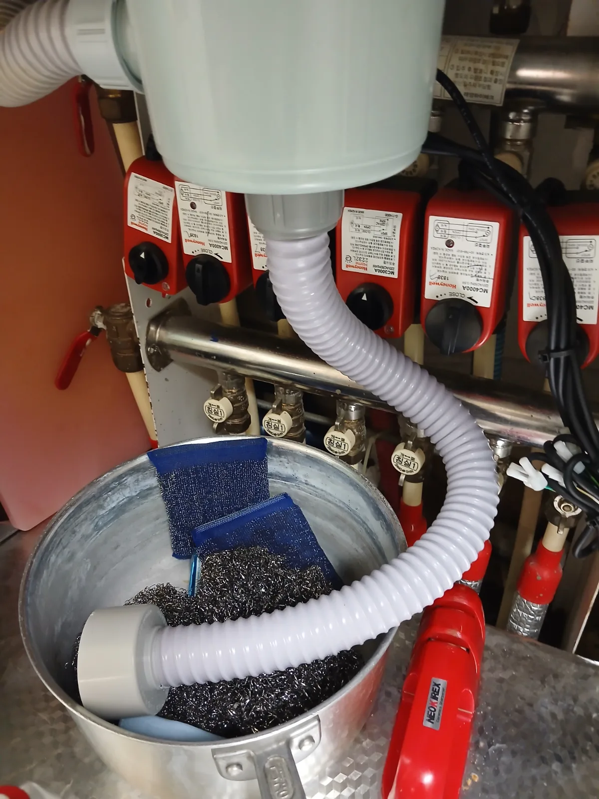

서초구 잠원동 싱크대막힘, 현장 도착 후 진단
싱크대 물이 제대로 내려가지 않는다는 긴급 요청을 접수한 뒤 석션 장비와 배관 공구를 준비해 서초구 잠원동 아파트 현장으로 신속하게 이동했습니다. 현장에서 물을 흘려보내자 소량의 물은 천천히 빠졌지만 사용량이 늘어나면 싱크볼 내부에 물이 고이면서 배수가 지연됐습니다.
싱크대 하부장을 열어 배관 구조를 확인한 결과 배수호스 주변에 난방 분배기와 여러 개의 밸브 구동기가 촘촘하게 설치돼 있었습니다. 작업공간이 매우 좁아 배수호스를 무리하게 당기거나 주변 설비를 건드릴 경우 연결 부위의 누수나 다른 설비의 손상으로 이어질 수 있는 구조였습니다.
싱크대막힘을 전문적으로 처리해 온 숙련 기술자가 배수호스의 연결 상태와 주변 설비 위치를 확인한 뒤, 필요한 부분만 안전하게 분리해 산업용 석션기로 막힌 구간을 집중 작업하기로 했습니다.
1단계: 증상 확인과 필요한 장비 작업
먼저 싱크대 하부장 내부의 물건을 정리하고 난방 분배기와 밸브, 연결 배관이 손상되지 않도록 작업 공간을 확보했습니다. 주변 설비 사이에 설치된 싱크대 배수호스의 연결 부속을 풀어 배관 입구를 개방했습니다.
배수호스를 분리하자 내부에 정체돼 있던 오염수와 기름 성분이 확인됐습니다. 싱크대 배관은 음식물 찌꺼기뿐만 아니라 설거지 과정에서 흘러 들어간 기름이 식으면서 배관 벽면에 달라붙어 막히는 경우가 많습니다. 배수 입구만 간단히 청소해서는 깊은 구간의 슬러지가 남을 수 있어 산업용 습식 석션기를 연결해 본격적인 흡입 작업을 준비했습니다.

2단계: 원인 구간 처리와 정상 작동 확인
싱크대 연결 배관에 석션 호스를 밀착시키고 압력이 새지 않도록 작업한 뒤 강한 흡입력을 집중했습니다. 석션을 시작하자 배관 내부에 고여 있던 탁한 오염수와 잘게 분해된 음식물 찌꺼기, 걸쭉한 기름 슬러지가 장비 안으로 대량 흡입됐습니다.
한 번의 흡입으로 끝내지 않고 배관 반응과 오염물의 배출 상태를 확인하면서 석션 작업을 반복했습니다. 사진처럼 석션기 내부에는 배관에서 빠져나온 누런 오염수와 기름 찌꺼기가 다량으로 모였습니다. 흡입되는 오염물의 양이 줄고 배관 내부의 공기 흐름이 원활해질 때까지 막힌 구간을 충분히 작업했습니다.
석션을 마친 뒤 분리했던 배수호스와 연결 부속을 원래 위치에 맞춰 재조립했습니다. 좁은 하부장 안에서 주변의 난방 설비를 건드리지 않도록 연결 상태를 세밀하게 확인하고 누수 여부까지 점검했습니다.

작업 결과와 재발 방지 안내
배수관 내부에 고여 있던 기름 슬러지와 음식물 침전물을 석션으로 제거한 뒤 싱크대에 충분한 양의 물을 반복해서 흘려보냈습니다. 작업 전에는 싱크볼에 고이던 물이 막힘과 역류 없이 빠르게 배출됐으며, 하부 배수호스 연결 부위에서도 누수가 발생하지 않는 것을 확인했습니다.
싱크대에 식용유나 국물의 기름 성분을 그대로 흘려보내면 배관 안에서 온도가 내려가면서 점차 굳게 됩니다. 이 기름층에 작은 음식물과 세제 찌꺼기가 달라붙으면 배수 통로가 좁아지고 싱크대막힘과 악취가 반복될 수 있습니다. 기름이 많은 음식물은 키친타월로 닦아 분리하고, 배수 거름망을 자주 청소하는 것이 좋습니다.
신라건축설비는 서초구 잠원동을 비롯한 서울 전 지역과 경기권에 신속하게 출동해 싱크대막힘·변기막힘·하수구막힘을 전문적으로 해결합니다. 좁은 싱크대 하부의 석션 작업부터 배관 내시경검사, 리지드 샤프트 배관스케일링, 고압세척, 공용배관과 오수관 진단, 배관 보수·교체 및 대형 배관공사까지 숙련 기술자와 전문 장비로 현장 상황에 맞춰 자체 대응합니다.
최종 조치: 싱크대 하부의 배수호스를 안전하게 분리한 뒤 산업용 석션기를 연결해 배관 내부의 오염수와 기름 슬러지를 집중적으로 흡입했습니다. 배수호스와 연결 부속을 다시 조립하고 충분한 양의 물을 흘려보내 정상적인 배수 상태를 확인했습니다.
현장 방문 전 확인하는 비용과 작업 범위
신라건축설비는 현장 증상과 배관 구조를 확인한 뒤 필요한 작업과 예상 비용을 안내합니다. 단순 관통으로 해결되는지, 배관내시경·석션·고압세척 또는 추가 장비가 필요한지는 현장 상태에 따라 달라집니다. 출장비와 야간 작업비, 추가 장비 비용이 발생할 수 있는 경우 작업 전에 먼저 설명하고 동의를 받은 범위에서 진행합니다.
업체를 선택할 때 확인할 사항
무조건적인 ‘0원’ 표현보다 실제 작업 범위, 추가 비용 조건, 사용 장비와 사후 대응 기준을 확인하는 것이 중요합니다. 해결되지 않았을 때의 비용 기준과 작업 후 동일 증상 발생 시 점검 범위를 사전에 문의해두면 불필요한 분쟁을 줄일 수 있습니다.
서초구 싱크대막힘 자주 묻는 질문
싱크대 물이 천천히 내려가면 바로 점검해야 하나요?
싱크대에 물을 사용하면 배수 속도가 현저히 느려지고 한꺼번에 많은 물을 흘려보낼 경우 싱크볼에 물이 고이는 증상이 나타났습니다. 배수관 내부에서 꿀렁거리는 소리와 함께 오염수가 쉽게 빠지지 않는 상태였습니다.처럼 증상이 나타나더라도 원인은 현장마다 다를 수 있습니다. 장비와 배관 구조를 확인한 뒤 필요한 작업 범위를 안내합니다.
작업 전 비용을 알 수 있나요?
작업 전 증상과 현장 여건을 확인해 예상 범위와 비용을 먼저 안내합니다. 변기 탈거, 장비 추가 투입 또는 공용배관 작업이 필요한 경우 고객 동의 없이 임의로 진행하지 않습니다.
약품으로 해결되지 않으면 어떻게 하나요?
완료 후 정상 작동을 함께 확인하고 작업 범위에 따른 사후 안내를 드립니다. 동일 증상이 반복되면 현장 기록을 기준으로 원인을 다시 점검합니다.
싱크대막힘 서울·경기 출동지역
신라건축설비는 서초구 잠원동 현장을 포함해 서울 25개 구와 경기도 31개 시·군의 배관 문제를 상담합니다. 현장 거리와 기사 배정 상황에 따라 출동 가능 여부를 먼저 안내드립니다.
서울 전 지역
강남구 · 강동구 · 강북구 · 강서구 · 관악구 · 광진구 · 구로구 · 금천구 · 노원구 · 도봉구 · 동대문구 · 동작구 · 마포구 · 서대문구 · 서초구 · 성동구 · 성북구 · 송파구 · 양천구 · 영등포구 · 용산구 · 은평구 · 종로구 · 중구 · 중랑구
경기도 주요 출동지역
수원시 · 용인시 · 고양시 · 화성시 · 성남시 · 부천시 · 남양주시 · 안산시 · 평택시 · 안양시 · 시흥시 · 파주시 · 김포시 · 의정부시 · 광주시 · 하남시 · 광명시 · 군포시 · 양주시 · 오산시 · 이천시 · 안성시 · 구리시 · 의왕시 · 포천시 · 양평군 · 여주시 · 동두천시 · 과천시 · 가평군 · 연천군